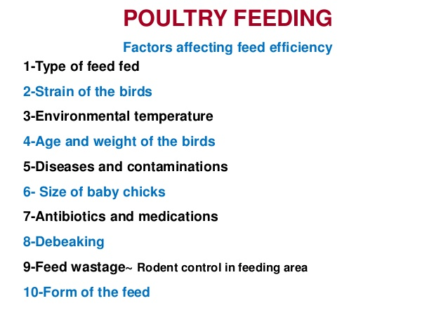

About poultry management
Achieving good bird, barn and gut health requires operational excellence and attention to detail. A combination of quality nutrition, veterinary guidance, and increased consideration of barn and bird management will help to ensure birds have the best possible chance to perform at their maximum potential.
The acronym “FLAWS” has commonly served as a reminder to check feed, light, litter, air, water, (bio)security, sanitation, space and staff. FLAWS actually serves as a detailed approach to best management practices, not only during brooding but throughout the life of the flock.
Some critical focus areas are as follows:
1.Biosecurity
Well-defined biosecurity practices throughout broiler production (pre-, during and post-placement) are crucial to successful poultry production.
Effective biosecurity can aid hygiene, vermin and insect control on-farm and help to limit disease transmission within and between barns.
2.Downtime between flocks
Adequate downtime of at least 14 days with appropriate cleaning and disinfection measures between flock placements helps to reduce transmission of disease between flocks and allows time to prepare for the next flock.
3.Pre-placement preparation
Pre-placement preparation is needed before the new flock arrives to help prevent losses during brooding and the rest of grow out.
Checkpoints to keep in mind: heaters, floor temperature, temperature and relative humidity probes, ventilation, drinkers, feeders, etc.
4.Coccidiosis prevention
Coccidiosis is a disease caused by a microscopic intestinal parasite. This parasite can have an impact on intestinal integrity and may predispose birds to other intestinal problems. Maintaining intestinal integrity during this time through innovative technologies provided in the Alltech® Gut Health Management program is critical in allowing birds to perform to their maximum levels despite gut health challenges.
5.Brooding management
With today’s improved genetic capabilities and the fast growth of birds, more time is being spent during the critical brooding phase. As a result, ensuring a good start in poultry production can have a significant impact on the future health and performance of the birds.
The brooding period is an important time for intestinal growth and the development of a balanced microflora.
6.Litter management
The litter in a poultry house acts as bedding for the birds. In addition to standing and resting on the bedding, birds will naturally peck at the litter. Litter condition and quality have an impact on broiler intestinal health and profitability, starting from when the chicks are placed all the way through production.
Wet litter presents a vicious cycle for intestinal health. Without proper management, even in patches, wet litter can serve as a breeding ground for potential pathogens and may be a starting point for intestinal stress that develops and leads to disease. As wet litter problems increase, ammonia levels in the barn rise, which can be potentially detrimental to bird health. It is much easier to prevent and manage litter moisture conditions before they start.
Some factors to consider which may help prevent the development of wet litter: type of material, quality of litter, litter depth, water quality, drinker line management, lighting management, ventilation and temperature.
Litter that is too dry and dusty can be one of many indications that the birds may not be drinking enough. Too much dusty material may lead to respiratory problems.
7.Water management
Drinking water accounts for 70–80 percent of the bird’s daily drinking needs. Poultry will generally consume more water than feed. As a result, water is the most critical nutrient for poultry. An abundance of clean water will reduce challenges and maximize performance.
Factors to consider when thinking about water management include:
Quality, height, pressure, mineral content and accessibility
Cleanliness of drinker lines/regulators prior to flock placement and during production
Flushing water lines between flocks and during production
Elimination of biofilms and mineral buildup
Drinker equipment maintenance
8.Feed management
Birds must have easy access to feed. Proper feeder line height corresponding to the height of the birds helps to reduce feed wastage and mixing feed with litter, and it ensures that all birds have access to feed. Adequate feed access is also achieved by following the feed line manufacturer’s recommendations for the number of birds per feed pan or line of trough feeder.
Birds will naturally peck at litter but avoiding “out-of-feed” events helps to reduce the potential for birds to peck excessively at the litter. Simple measures like activating trigger feed pans and monitoring feed bin levels during barn checks can help to prevent such events.
Good feed quality that avoids contaminants like mycotoxins is important to ensure performance.
9.Stocking density
A higher stocking density of poultry in addition to crowded housing conditions has been shown to have a negative impact on performance, causing stress to both the birds and intestinal microbiota.
Lowering stocking density throughout the overall production of the birds may help to reduce challenges.
10.Environmental management
General environmental management of the barn includes many components, such as temperature, relative humidity, ventilation and lighting.
Understanding that these components work both separately and together can help to guide your management practices.
11.Monitoring during times of transition
Increasing the frequency at which barns are walked and examining the activity of the flock can help with early disease detection.
Daily monitoring of temperature, humidity and ventilation inside the barn as well as outside temperature is recommended.
Monitoring transition times can help with understanding what is happening in the barn (e.g., from day to night, when birds are placed, during half-house brooding, feed changes, etc.).
Monitoring feed and water consumption helps to monitor the flocks’ progress.
12.Keeping an eye on equipment
Walking the barns routinely will also help to ensure equipment remains in working order.
13.Mortality checks
Cull diseased birds as early as possible.
14.Flock health management
Work with your veterinarian to design a program customized for your flock’s health.
15.Communication and teamwork
Ensuring strong communication and coordination between all those involved in helping your farm run smoothly will ensure a stronger and more successful gut health management program for your birds.
Albin Anto
Department of BCA(Computer Applications)
Albin Anto
Department of BCA(Computer Applications)
Department of BCA(Computer Applications)